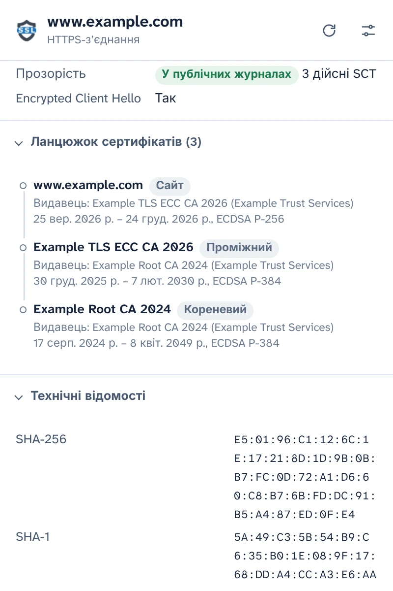
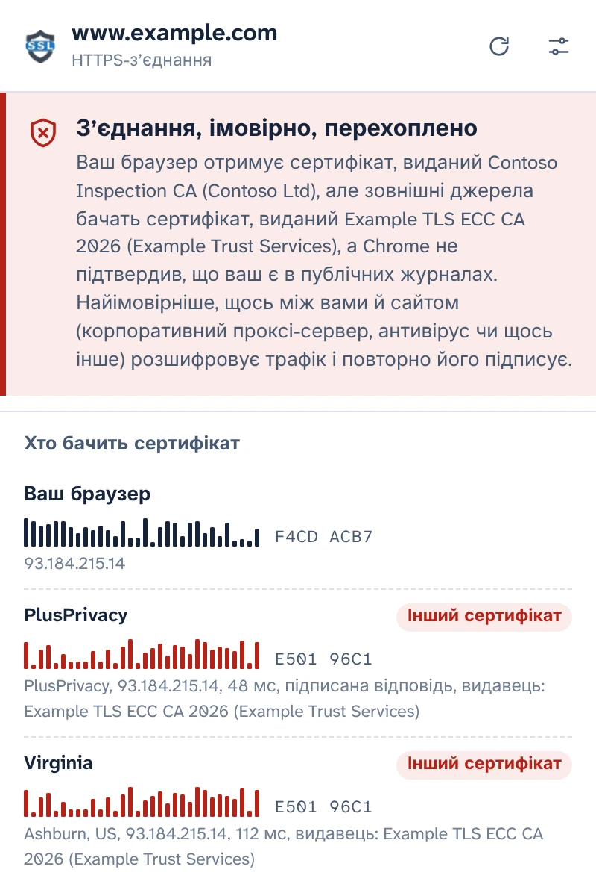
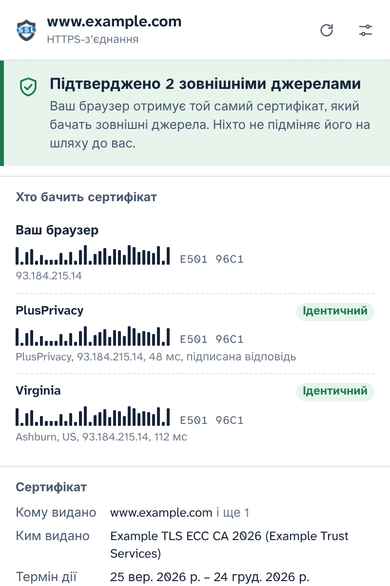
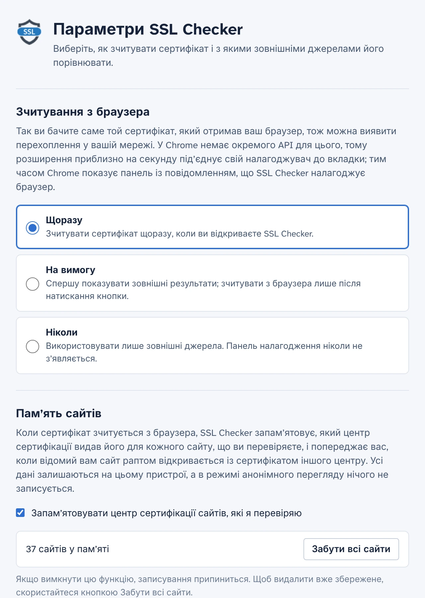

Перегляньте сертифікат, який справді отримав ваш браузер
SSL Checker зчитує сертифікат сайту, відкритого у вашій вкладці, безпосередньо з Chrome і порівнює його з тим, що бачать незалежні нотаріуси з інших місць в інтернеті. Якщо вони відрізняються, щось між вами й сайтом його підміняє.
Безкоштовно, з відкритим вихідним кодом. Без облікового запису, без аналітики.
Підтверджено 2 зовнішніми джереламиЗ’єднання, імовірно, перехоплено
Ваш браузер отримує той самий сертифікат, який бачать зовнішні джерела. Ніхто не підміняє його на шляху до вас.Ваш браузер отримує сертифікат, виданий Contoso Inspection CA, але зовнішні джерела бачать сертифікат, виданий Example TLS ECC CA 2026.
- Ваш браузер E501 96C1F4CD ACB7
- PlusPrivacy ІдентичнийІнший сертифікат E501 96C1
- Virginia ІдентичнийІнший сертифікат E501 96C1
Усі подробиці з’єднання
Те, що Chrome отримав для цієї вкладки, зчитане із самого браузера, а не завантажене ще раз із сервера.
- Імена, на які поширюється сертифікат, видавець, термін дії та кількість днів, що залишилися, рівень перевірки (DV, OV, EV)
- Версія TLS, обмін ключами, зокрема гібридний постквантовий, шифр і Encrypted Client Hello
- Статус Certificate Transparency і підписані позначки часу сертифіката
- Повний ланцюжок, відбитки й усі розширення. Скопіюйте PEM або завантажте ланцюжок.

Виявляйте перехоплення HTTPS
Корпоративні проксі-сервери, антивіруси, що сканують HTTPS, і зловмисники в публічних мережах Wi-Fi працюють однаково: вони розшифровують ваш трафік і передають браузеру власний сертифікат. Сторінка виглядає як завжди, і значок замка не зникає.
SSL Checker запитує нотаріуса PlusPrivacy та доданих вами нотаріусів, який сертифікат той самий сайт показує їм. Вони підключаються з інших місць в інтернеті, в обхід усього, що є у вашій мережі, і відбитки порівнюються:
- Скрізь той самий сертифікат: підтверджено.
- Ваш інший і його немає в публічних журналах: імовірно, перехоплено. SSL Checker називає центр сертифікації, що видав сертифікат-замінник, і розпізнає відомі продукти для інспектування HTTPS.
- Джерела суперечать одне одному: про це так і повідомляється, з поясненням, що може означати кожен випадок.

Відповіді, які ніхто на шляху не підробить
Те, що перехоплює ваш трафік, могло б спробувати відповідати й від імені нотаріуса. Але в нього нічого не вийде: нотаріус PlusPrivacy підписує кожну відповідь за допомогою Ed25519, а SSL Checker перевіряє підпис, випадкове число, надіслане з кожним запитом, і сайт, про який він запитував. Підроблену, повторно відтворену чи перенаправлену відповідь буде відхилено, а спливаюче вікно повідомить, що щось її змінило.
Запустіть власного нотаріуса
Код нотаріуса відкритий: це невеликий сервіс на Node.js для Docker, захищений від лавини запитів і від запитів до приватних мереж. Установіть його на будь-якому сервері, додайте його адресу й ключ у параметрах, і його відповіді перевірятимуться так само.

Ви вирішуєте, коли працює налагоджувач
У Chrome немає API для розширень, який надавав би сертифікат завантаженої сторінки, тому, поки SSL Checker зчитує сертифікат, він приблизно на секунду під’єднує до вкладки налагоджувач Chrome, а Chrome тим часом показує панель налагодження. У параметрах ви вибираєте, коли це відбувається:
- Щоразу, коли ви відкриваєте спливаюче вікно
- На вимогу, одним натисканням у спливаючому вікні
- Ніколи: запитуються лише нотаріуси
Пам’ятає сайти, які ви перевіряєте
SSL Checker запам’ятовує, який центр сертифікації використовує кожен сайт, і попереджає вас, коли відомий вам сайт раптом використовує інший, наприклад у новій мережі Wi-Fi. Ця пам’ять зберігається на вашому пристрої, ніколи не використовується в режимі анонімного перегляду, і її можна вимкнути або очистити в параметрах.

Конфіденційність за задумом
- Нічого не зчитується й не надсилається, доки ви не погодитеся у спливаючому вікні.
- Ваш пристрій залишають лише ім’я хоста й порт сайту — у тілі HTTPS-запиту до нотаріусів, якими ви користуєтеся.
- Нотаріус PlusPrivacy не веде записів про перевірені сайти. Його можна вимкнути або запитувати лише нотаріусів, яких ви запустили самі.
- Без аналітики, без відстеження, без облікового запису. Пам’ять сайтів ніколи не залишає ваш пристрій.
- Цей сайт теж не має аналітики й нічого не завантажує з інших серверів.
POST /v1/cert
Content-Type: application/json
{
"host": "www.example.com",
"port": 443,
"nonce": "Xq3MpTb0vR9kLs2eWn5yZA"
}